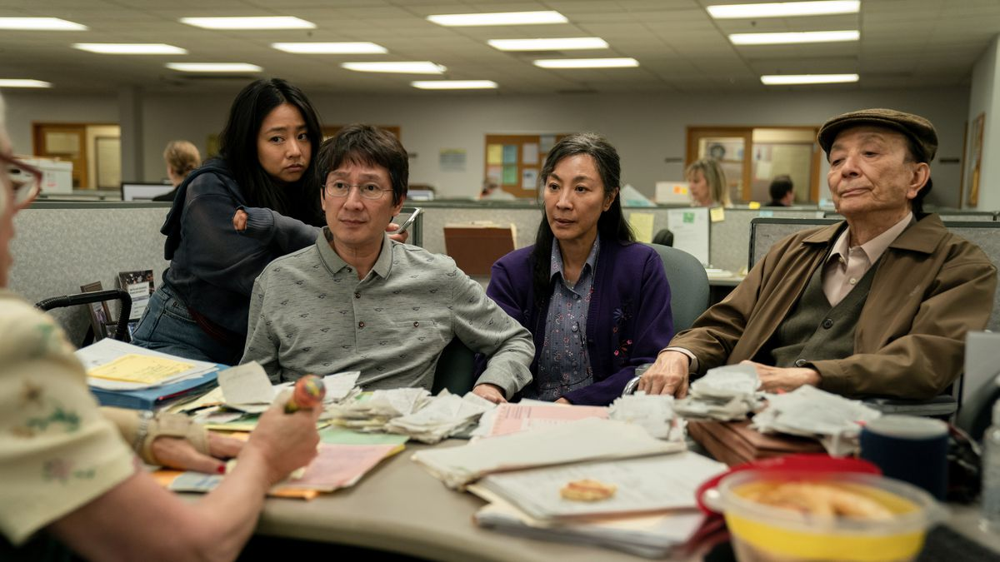

Waymond's character is someone who's kind and compassionate in life; his values pushes him to treat everyone with kindness, regardless of the situation.
Generation Gap is showchased in the movie with three generations of Chinese immigrants (Evelyn's father as a non-immigrant, Evelyn as a first-generation immigrant, and Evelyn's daughter as a second-generation immigrant). They all can't seem to understand one another in the movie as Evelyn relates her relationship with her father to her relationship with her daughter and the relationship between those two without her.

Battling with multiverses and antagonists, Evelyn learns throughout the movie that she is not alone. As she uncovers this fact at the end, she learns to comfort and be considerate of her husband Waymond and daughter Joy.